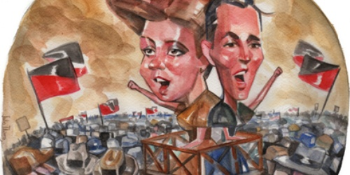

Mujeres anarquistas: Feroces de lengua y pluma

Cuando tomaban la palabra, las fuerzas policiales se ponían en guardia. Dos mujeres anarquistas que encarnaron, a principios del siglo pasado, el reclamo por las condiciones de trabajo. Virginia Bolten y Juana Rouco forjaron las bases del feminismo proletario, barrieron ...